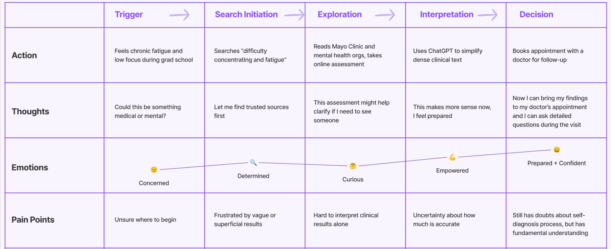
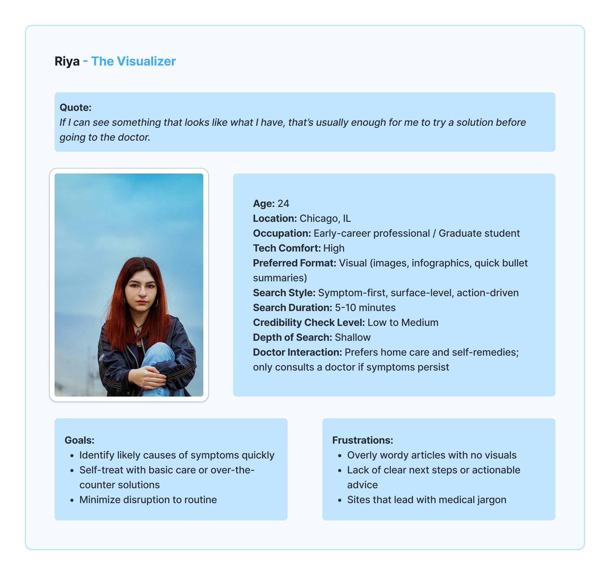
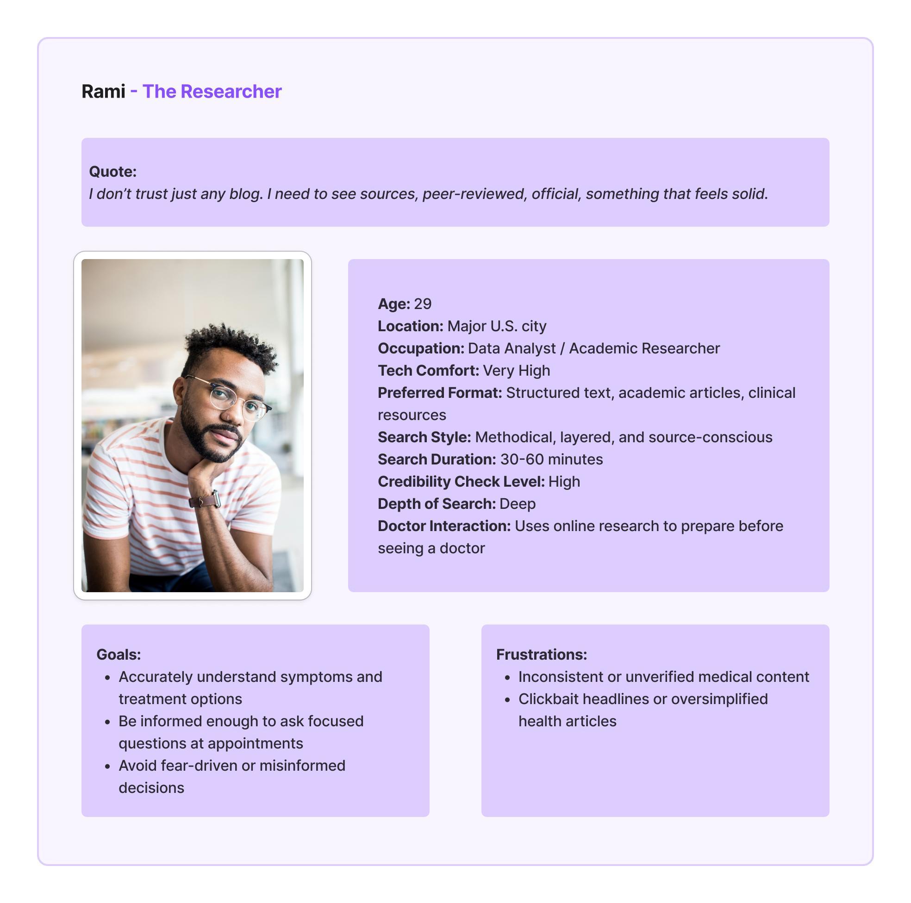
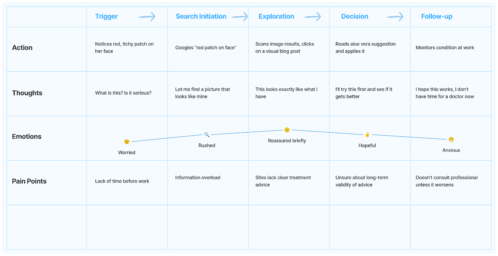

Live symptom searches
Participants imagined a recurring neck lump and searched online while thinking aloud. We observed queries, navigation, source choices, and stopping points through Microsoft Teams.
Exploring how people without medical backgrounds search for symptoms, decide which sources to trust, and determine what to do next.

From seeking a visual match to comparing trusted sources: tracing the moments that shape confidence.
See how we studied it ↓People without medical training encounter conflicting explanations, unfamiliar terminology, and alarming headlines when searching for symptoms. We wanted to understand how they decide what to trust—and what to do next.
Someone looking for reassurance may leave more anxious, stop at a familiar-looking answer, or feel unsure about seeking professional care. Understanding those moments helps identify ways to communicate clearly without creating false confidence.
This study examined information-seeking behavior, not diagnosis or clinical outcomes.
Participants imagined a recurring neck lump and searched online while thinking aloud. We observed queries, navigation, source choices, and stopping points through Microsoft Teams.
In 30–45 minute semi-structured interviews, we explored recent health searches, trust cues, emotional responses, and decisions about what to do next.
We used AEIOU to organize observations and inductive coding to analyze interview transcripts. Affinity mapping brought patterns together; behavioral personas and journey maps made the different search strategies visible.
16 adult students, ages 21–32, without medical training; recruited through our networks. Sessions were recorded with signed and verbal consent.
| Participant | Age | Gender identity | Occupation |
|---|---|---|---|
| 1 | 24 | Female | Full-time student |
| 2 | 23 | Female | Full-time student |
| 3 | 32 | Male | Full-time student |
| 4 | 21 | Male | Full-time student |
| 5 | 26 | Male | Full-time student |
| 6 | 26 | Male | Full-time student |
| 7 | 27 | Male | Full-time student |
| 8 | 23 | Male | Full-time student |
| Participant | Age | Gender identity | Occupation |
|---|---|---|---|
| 1 | 28 | Male | Full-time student |
| 2 | 24 | Female | Full-time student |
| 3 | 26 | Male | Full-time student |
| 4 | 25 | Female | Full-time student |
| 5 | 29 | Female | Full-time student |
| 6 | 24 | Female | Full-time student |
| 7 | 23 | Female | Full-time student |
| 8 | 26 | Male | Full-time student |
Team synthesis from the final report—not individual participant profiles or medical recommendations.



Team: Ivy Wang, Taha Naqvi, Adithyan Kumaresan, and Savio Fernandes · HCI 445, DePaul University · June 2025.
Participants often wanted to know whether to worry, rather than identify a diagnosis. Searching commonly stopped once they felt reassured.
Recognizable brands, .org domains, and repeated information shaped trust more than checking authors or evidence. Familiarity was a perceived signal—not proof of accuracy.
Everyday language, revised queries, multiple tabs, images, and summaries helped participants piece information together.
Worst-case headlines could cause anxiety and disengagement. Calm language and clear structure encouraged participants to keep reading.
“Why does every site mention cancer first? It just freaks me out.”Participant quoted in the final report
Limits: A small convenience sample of students and one observation scenario cannot represent all health searches. Interviews covered past experiences rather than live behavior.
Support visual and text-based searches, make source credentials and doctor review visible, and offer quick summaries with plain-language explanations.
Source comparison, bookmarks, and doctor-visit preparation could help people carry what they learn into their next step. Guidance about seeking care would need professional review.
Include broader age groups and digital-literacy levels, explore more varied symptom scenarios, and investigate personalized, context-aware guidance.
Longer-term studies could examine how these tools affect trust and decisions beyond the initial search.
Based on the final report’s priority matrix, discussion, and future work (printed pages 17–19). These are proposed directions, not implemented features or validated clinical outcomes.